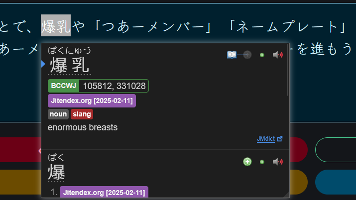

よみ
あうどる

よみはテキストを入力して、Yomitanというブラウザ拡張機能でスキャンできるシンプルなサイトです。
あうどるがデベロッパーです。
テキストをマウスオーバーして、Shiftキーを押したら、辞書がポップアップというブラウザ拡張機能です。（スマホもタップでできます。）
公式サイトで詳細です 👉 https://yomitan.wiki/
Yomi is a simple and lightweight website for the purpose of inputting text and scanning with the browser extension Yomitan.
Developed by Audr.
It is a browser extension that lets you hover your cursor over a piece of text, press Shift and a dictionary pops up. In mobile, you can just simply tap.
Get it here 👉 https://yomitan.wiki/